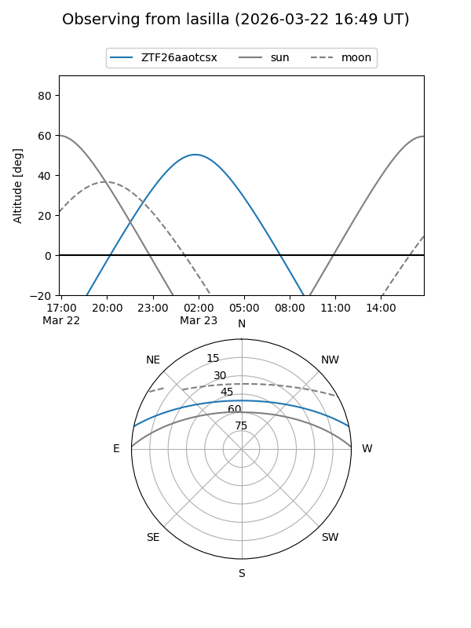
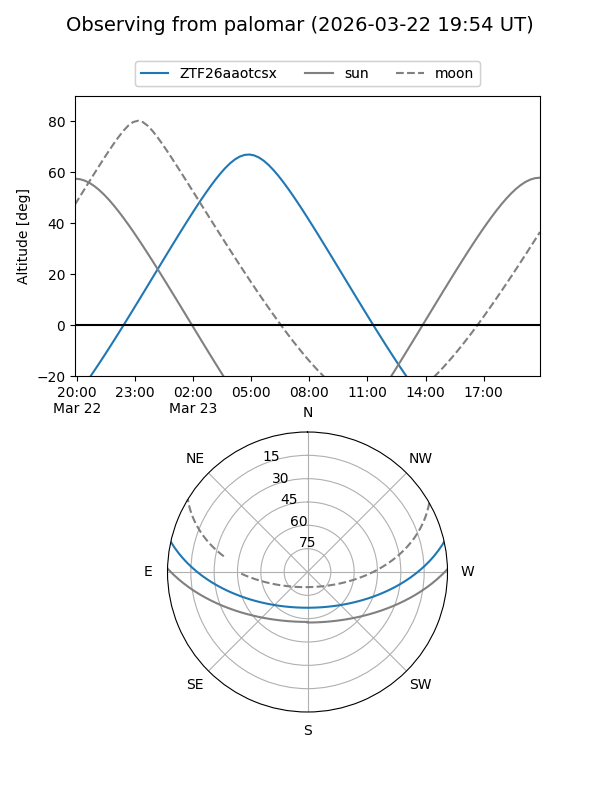

ZTF26aaotcsx
Target ZTF26aaotcsx at 2026-03-23 08:23
Aliases and brokers:
FINK: link
Lasair: link
ALeRCE: link
alt names
ZTF26aaotcsx (ztf,fink_ztf)
Coordinates:
equatorial (ra, dec) = 136.3433,+10.48715
equatorial (HMS+DMS) = 09:05:22.39,+10:29:13.75
galactic (l, b) = (218.8750,+34.45797)
Flags:
Photometry:
last ztfg=16.86
1 ztfg detections
Lightcurve
Visibility


Additional plots